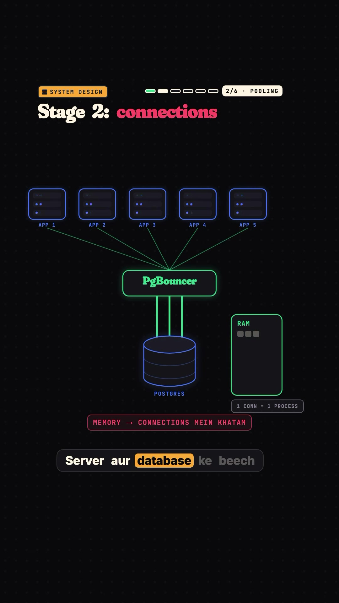
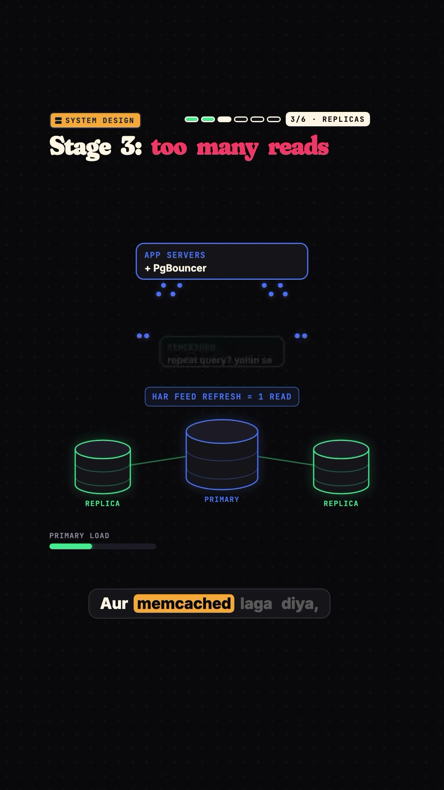
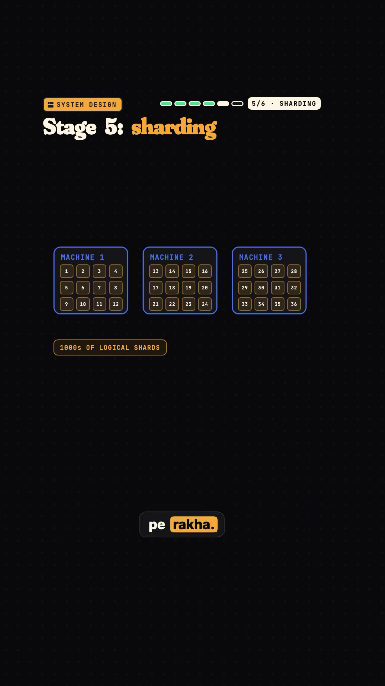
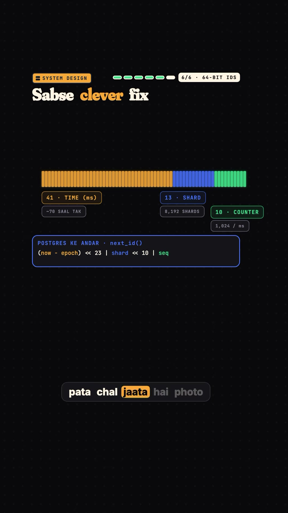

Engineering · System-Design
How Instagram Scaled PostgreSQL to 3 Billion Users: The 6-Stage Architecture Evolution
Key Takeaways
- PostgreSQL at Hyperscale: Instagram scaled from a single underpowered server on Day 1 to over 3 billion active users while retaining PostgreSQL as its core transactional persistence layer.
- The 6 Architecture Bottleneck Stages: System evolution proceeded through six progressive failure points: (1) Single-box CPU choke → (2) Connection exhaustion (PgBouncer) → (3) Read query saturation (Read Replicas + Memcached) → (4) Heavy table separation → (5) Virtual logical sharding → (6) Distributed 64-bit Snowflake ID generation.
- Logical Sharding Over Physical Sharding: Instead of binding shards 1:1 to physical servers, Instagram partitioned data into thousands of lightweight logical database shards mapped onto a smaller cluster of physical nodes, allowing frictionless rebalancing without global data reshuffling.
- The Instagram 64-Bit Custom ID (Snowflake): Solved multi-shard collision and timestamp ordering using custom PL/pgSQL logic: 41 bits (epoch timestamp in ms) + 13 bits (logical shard ID) + 10 bits (auto-increment sequence), yielding chronological K-sortable primary keys natively.
The Architectural Journey: From Day 1 to 3 Billion Users
On Day 1, Instagram experienced 25,000 signups on a single server weaker than a modern consumer laptop running an un-tuned PostgreSQL instance. As concurrency exploded, the database failed six distinct times. Each fix solved an immediate hardware or concurrency bottleneck.
Stage 1: Server Choke (Day 1 Cloud Migration)
25,000 users overwhelmed the single physical box on launch night. The initial resolution was straightforward vertical migration: transitioning the application server and PostgreSQL database to Amazon Web Services (AWS EC2).
Stage 2: Connection Pool Exhaustion & PgBouncer
As user traffic surged, Instagram horizontally scaled its Django application worker processes. However, PostgreSQL implements a process-based concurrency model where each open client connection forks a separate OS backend process consuming substantial memory (typically 5–10 MB per connection).

The Solution: Instagram placed PgBouncer as an intermediate connection pooler in transaction pooling mode. Thousands of ephemeral Django requests were multiplexed through a tightly controlled pool of persistent database connections, halting RAM exhaustion.
Stage 3: Read Saturation (Read Replicas & Memcached)
Feed refreshes created massive read amplification. Every feed load triggered multiple relational queries on the primary database, driving CPU saturation.

- Read Replicas: Asynchronous streaming replication replicas absorbed read traffic for user profiles and feeds.
- Memcached Caching: Frequently queried user profiles and relationship counts were cached in-memory.
- The Emerging Bottleneck: While read traffic was offloaded, all write transactions (likes, comments, photo uploads) still concentrated entirely on the single primary database node.
Stage 4: Vertical Limits & Table Splitting
The photos table was the fastest-growing relation in the database. When the photos table exceeded 60 GB, it approached the physical limits of AWS's largest available instance type at the time (which maxed out at 68 GB RAM).
The Solution: Vertical table partitioning. The photos relation was segregated into its own dedicated database cluster, separating media metadata from user accounts and social graph tables.
Stage 5: Horizontal Sharding via Logical Shards
When photo volume exceeded single-machine storage, horizontal sharding became mandatory. However, a naive physical sharding scheme (e.g. dividing users across 4 physical machines by user_id % 4) introduces a catastrophic operational hazard: adding a 5th machine requires reshuffling almost the entire dataset.

The Logical Shard Architecture:
- Instagram pre-provisioned thousands of small logical PostgreSQL schemas (e.g., 8,192 logical shards) across a smaller initial set of physical database machines.
- A central mapping table registered which logical shard resided on which physical machine (e.g. Shards 1–1000 on Machine A, Shards 1001–2000 on Machine B).
- When a physical node reached capacity, engineers simply exported specific logical shards (e.g. via
pg_dump/ logical replication) to a new node and updated the shard map pointer, achieving zero-reshuffle rebalancing.
Stage 6: The 64-Bit Custom ID Generator (Snowflake)
With photos distributed across thousands of logical shards, traditional auto-incrementing serial IDs caused immediate primary key collisions (Photo #1 on Shard 1 clashed with Photo #1 on Shard 2). Generating IDs via UUIDs was rejected because UUIDs are 128-bit (excessive index size) and lack natural chronological ordering.

| Bit Range | Bit Allocation | Purpose & Capacity |
|---|---|---|
| Bits 63–23 (41 bits) | Timestamp (ms) | Milliseconds elapsed since custom Instagram epoch (~69 years without rollover). |
| Bits 22–10 (13 bits) | Logical Shard ID | Identifies which logical shard holds the row (supports up to 8,192 shards). |
| Bits 9–0 (10 bits) | Auto-Increment Sequence | Modulus counter supporting up to 1,024 unique IDs per shard per millisecond. |
The In-Database PL/pgSQL Function:
CREATE OR REPLACE FUNCTION next_id(OUT result bigint) AS $$ DECLARE our_epoch bigint := 1314220021721; -- Custom epoch in ms seq_id bigint; now_millis bigint; shard_id int := 1143; -- ID of this logical shard BEGIN SELECT nextval('table_id_seq') % 1024 INTO seq_id; SELECT FLOOR(EXTRACT(EPOCH FROM clock_timestamp()) * 1000) INTO now_millis; result := (now_millis - our_epoch) << 23; result := result | (shard_id << 10); result := result | (seq_id); END; $$ LANGUAGE PLPGSQL;
Strategic Advantages of the 64-Bit ID:
- Time-Sortable (K-Sortable): Newest photos naturally sort to the top by ID value without requiring a separate timestamp B-Tree index.
- Self-Describing Routing: Given any photo ID (e.g.
11637205501278089), bitwise shifting immediately reveals exactly when it was created and which logical shard hosts it, eliminating cross-shard index lookups. - Zero External Coordination: IDs are generated autonomously inside PostgreSQL without reliance on external distributed coordinators (like ZooKeeper).
Conclusion: Identify the Bottleneck Before Changing Technologies
By methodically identifying and addressing specific resource bottlenecks—CPU, connection memory, read saturation, disk capacity, and ID collisions—Instagram scaled write throughput from 90 likes/sec to over 10,000+ likes/second while maintaining PostgreSQL reliability.
Original Source Reference
Instagram Reel: https://www.instagram.com/reel/DegPVfBCW18/
Creator: @backendlore (Backend Lore • System Design & AI)
Caption: "System design problem: how Instagram scaled its Postgres database? #systemdesign #softwareengineer #interviewprep"